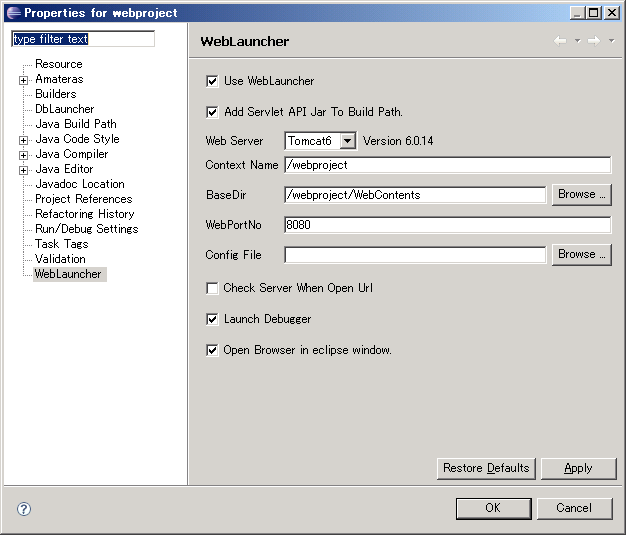
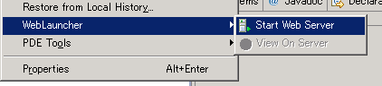
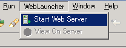
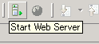
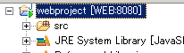
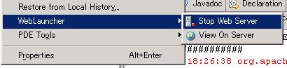
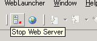

- Select WebLauncher > Start Web Server from the project's context menu.
 - Select WebLauncher > Start Web Server in the menu bar.
 - Click the Start Web Server button in the toolbar.


- Select WebLauncher > Stop Web Server from the project's context menu.
 - Select WebLauncher > Stop Web Server in the menu bar.

- Click the Stop Web Server button in the toolbar.
